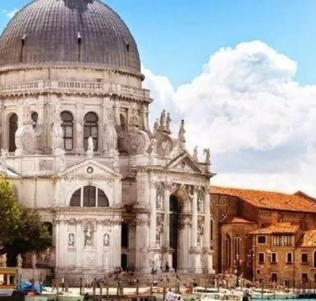
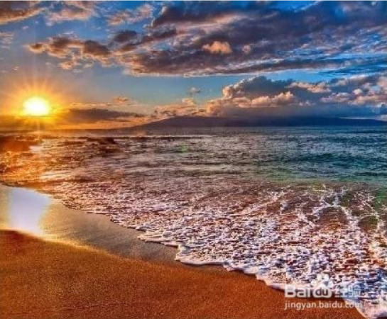
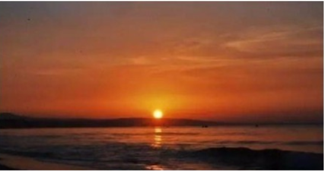
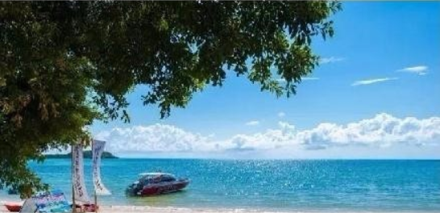
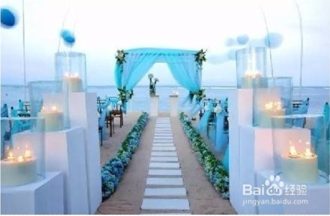
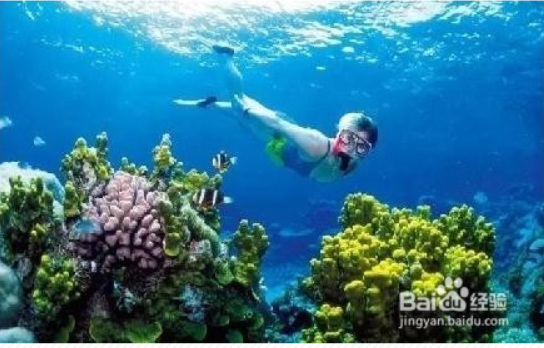
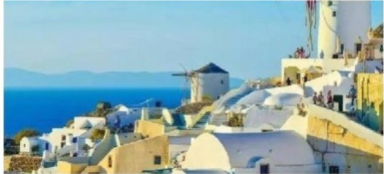
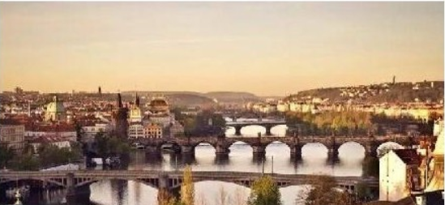

全球8个浪漫旅行圣地
浪漫之旅值得一生回忆

威尼斯： 威尼斯的美食无与伦比的，文艺复兴的精华至今任闪耀着光芒，没有恼人的汽车噪音，只有贡多拉不紧不慢的浆声。 美丽的建筑倒映在水中，威尼斯也漂荡在水中，就像一个漂浮在碧波上浪漫的梦。

夏威夷： 夏威夷吸引旅游者的，并非名胜古迹，而是得天独厚的美丽环境，夏威夷人的热情、友善与诚挚。 世界上很难找到像夏威夷这样一个令人身心完全放松的热带环境。火山公园，草裙舞，银色沙滩，还有，在绝不会懈怠到快要睡着的哈纳之路上驾车飞驰。

美奈： 曾经的小渔村，如今已经是越南著名的海滨度假胜地，长长的海岸线、热闹的渔村以及夜风海浪正是所有人期盼的风景。 在美奈，每日都可以吃到新鲜的海鲜，欣赏到绝美的日落，玩到刺激的海上娱乐项目，而低廉的消费让美奈比任何其他地方更容易实现度假梦想。

苏梅岛： 在这片远离喧嚣的世外桃源，水清沙白的魅力海滩比比皆是。和煦的阳光、最美的日落、舒爽的海风、摇曳的椰林......这些元素正不断撩拨那颗想要远走的心。

巴厘岛： 幽蓝海水绵白细沙，巴厘岛就像经线纬线一样，定义了世界上“人间天堂”的存在。 巴厘岛的白沙滩、世界级的冲浪点、珊瑚礁和水疗中心无处不在，而且还有很多田园农舍、森林草原和急流深谷，错落有致地分布在面积不大的土地上。一座座优雅精致的别墅隐藏其间，营造出遗世独立的情调，弥漫着花香的传统SPA令人身心愉悦。

大堡礁： 这里是潜水天堂，瑰丽的海底珊瑚礁等待你的探寻。这里也是度假的胜地，岛上有不同星级的酒店，你可以找个喜欢的沙滩和海岛，在那发上一天的呆；也可以深入海底见识水下斑斓的世界。

伊亚小镇： 圣托里尼岛的第二大城镇，白色的房子、蓝顶的教堂、传统的风车在夕阳的照耀下总是能让人陶醉。 这里还有全世界最美丽的日落，坐在悬崖边就可以看到全世界最美丽的日落。这种夕阳美景被许多艺术家、摄影家作为灵感的来源。

布拉格： 布拉格的魅力绝不仅限于为数众多的历史古迹，更在于它独一无二的城市氛围。 连续1000多年不间断的建筑发展为城市增添了许多神秘与浪漫，音乐、艺术、文学发展的绚丽多彩。 走在街上，就像是在穿越时空的漫步，历史和现代完美地融合在一起。无论在布拉格的旅程如何度过，临行时都会有一种感觉：只来一次远远不够！
>
首页
地点游
成都
绵阳
云南
主题游
浪漫基地
避暑圣地
春景
夏景
秋景
冬景
夜景
留言板